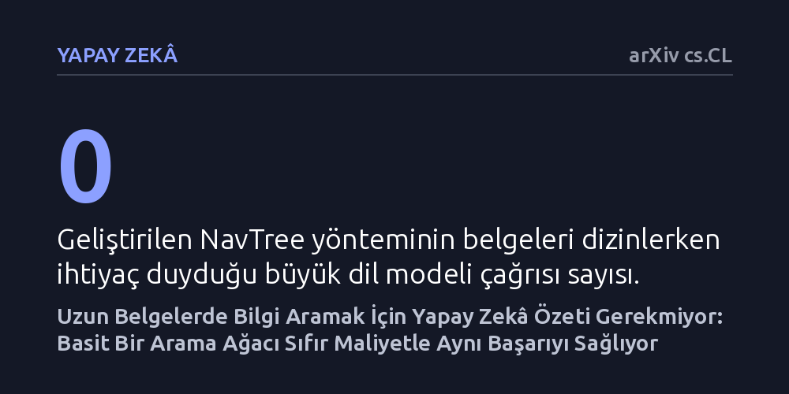

YAPAY-ZEKA · arXiv cs.CL · 2026-10-07
Araştırmacılar, uzun belgelerdeki soru-cevap sistemlerinde yapay zekâyla özet ağacı oluşturmanın maliyetine değip değmediğini inceledi. Sonuçlar, pahalı özet metinleri yerine yalnızca gezinme amaçlı basit bir ağaç yapısı kullanmanın sıfır indeksleme maliyetiyle daha yüksek başarı sağladığını gösterdi.
Büyük belgeleri tarayan yapay zekâ sistemlerinde binlerce liralık özetleme maliyetine katlanmanın gereksiz olabileceğini, asıl kazanımın üretilen özetler değil doğru arama haritası olduğunu gösteriyor.

Büyük dil modelleri etkileyici metinler üretebilse de, yüzlerce sayfalık teknik kılavuzlar, hukuki sözleşmeler veya uzun raporlar söz konusu olduğunda doğrudan kendi hafızalarına güvenemezler. Bu yüzden 'Bilgi Getirmeyle Zenginleştirilmiş Üretim' (RAG) sistemleri kullanılır; yani model yanıt üretmeden önce harici belge taranır ve en alakalı parçalar modele aktarılır. Ne var ki klasik yöntemler belgeyi düz bir liste gibi taradığında, bulunan parçalar genellikle metnin tek bir bölgesinde kümelenir. Bu durum, cevabın belgenin farklı sayfalarındaki ipuçlarının birleştirilmesini gerektirdiği çok adımlı sorularda sistemin kritik kanıtları kaçırmasına yol açar.
Yapay zekâ araştırmacıları bu sorunu aşmak için son dönemde metin parçalarını gruplayıp özetleyen ağaç yapılarına yöneldi. RAPTOR gibi popüler yaklaşımlar, belgeyi işlerken her küme için büyük dil modellerine başvurarak katman katman özetler çıkarır. Ancak bu işlem, her bir belge için binlerce yapay zekâ çağrısı yapmak ve ciddi bir maliyet ile zaman yükü üstlenmek anlamına gelir. İşte bu çalışmanın sorduğu temel soru tam da burada devreye giriyor: Ağaç tabanlı bu sistemlerin başarısı gerçekten üretilen o pahalı özet metinlerinden mi geliyor, yoksa başarının asıl mimarı belgenin içinde gezinmeyi kolaylaştıran ağaç iskeleti mi?
Araştırmacılar bu soruyu yanıtlamak için 'NavTree' adını verdikleri yeni bir getirme mimarisi geliştirdi. NavTree, belgeleri indekslerken dil modellerine tek bir çağrı dahi yapmıyor. Bunun yerine, bilgisayar biliminin klasik araçlarından biri olan dengeli segment ağaçlarını kullanarak metin parçaları üzerinde deterministik bir iskelet kuruyor. Ağaç hiçbir yapay zekâ özeti içermiyor; yalnızca arama algoritmasına belgenin farklı bölgelerine nasıl ulaşacağını gösteren bir gezinme iskelesi sunuyor.
Sorgu anında sistem, bulunan ilk ipuçlarından yola çıkarak ağacın kökünden aşağıya doğru hem kelime eşleşmesine hem de anlamsal benzerliğe dayalı hibrit bir yürüyüş gerçekleştiriyor. En kritik tasarım tercihi ise arama bittiğinde ortaya çıkıyor: Sistem, okuyucu dil modeline ara katmanlardaki yapay zekâ özetlerini değil, doğrudan belgenin en altındaki ham metin parçalarını iletiyor. Araştırmacılar bu yaklaşımı hem klasik düz arama yöntemleriyle hem de RAPTOR'un farklı sürümleriyle eşit işlem maliyeti ve eşit kaynak bütçesi altında kapsamlı deneylerle sınadı.
Yapılan deneyler, arama başarısında asıl belirleyici faktörün özet metinleri değil, gezinme yapısı olduğunu ortaya koydu. NavTree, indeksleme aşamasında hiçbir dil modeli çalıştırmamasına yani sıfır ek maliyet üretmesine rağmen, değerlendirilen tüm hiyerarşik yöntemler arasında eşit maliyetli en güçlü model oldu ve en gelişmiş düz arama temelini yakaladı. Çok adımlı soru-cevap testlerinde ise geleneksel BM25 algoritmasını sınıf bazında belirgin farkla geride bırakan tek hiyerarşik sistem olmayı başardı.
Makalenin en dikkat çekici sonucu, özet üreten standart RAPTOR modeliyle yapılan birebir karşılaştırmada görüldü. Literatürde yayımlanan ve güçlü küme özetleriyle donatılan RAPTOR varyantı dahi, eşit okuyucu bütçesi verilen her senaryoda NavTree'nin gerisinde kaldı. Ayrıca araştırmacılar okuyucu dil modelini daha güçlü veya açık ağırlıklı alternatiflerle değiştirdiklerinde ya da bileşenleri tek tek ayrıştırdıklarında bu üstünlüğün değişmediğini doğruladı.
Bu bulgular, yapay zekâ mühendisliğinde sıkça görülen 'her aşamaya bir büyük dil modeli ekleme' refleksinin sorgulanması gerektiğini gösteriyor. Şirketler ve geliştiriciler, uzun kurumsal belgelerden bilgi çeken sistemler kurarken çoğu zaman indeksleme maliyetlerini katlayan ağır özetleme boru hatları inşa ediyor. Oysa bu çalışma, akıllıca tasarlanmış klasik bir veri yapısının ve doğru bir gezinme mekanizmasının, dil modellerinin ürettiği özetlerden daha tutarlı sonuçlar verebileceğini kanıtlıyor.
Sonuç olarak, yapay zekâ destekli arama sistemlerinde verimlilik artışının anahtarı her zaman daha büyük modeller çalıştırmaktan geçmiyor. Belgeleri haritalandırmak için deterministik ve ucuz algoritmalar kullanıp, pahalı dil modellerini yalnızca nihai cevabı sentezleyecek son okuyucu aşamasına saklamak hem maliyeti radikal biçimde düşürüyor hem de bilgiye erişim kalitesini artırıyor.